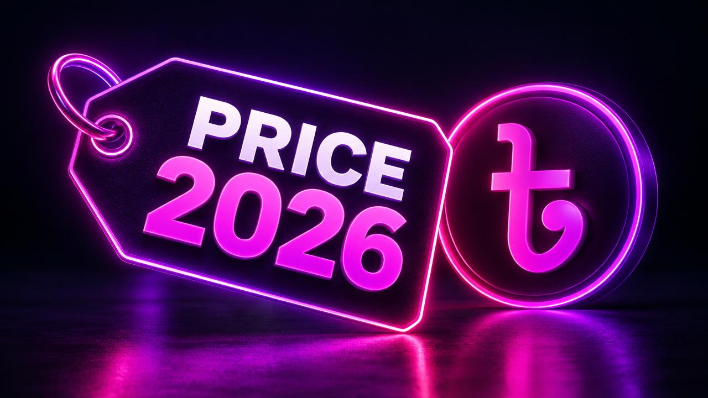

Rakib was fixing the last bug on an online order form for a local restaurant. He pressed send and saw the message: credit limit reached. The restaurant owner wanted to start taking orders that evening. Rakib had questions: What exactly is the Lovable credit limit? Why did I reach it so fast? And how do I keep building right now?
This guide answers all three. You will learn what the Lovable credit limit is, why people run out of credits, how Lovable credit cost is decided, and five legitimate ways to continue.
What Does "Credit Limit Reached" Mean?
The message means you have used all the credits available to you for the current period. Every plan has an allowance. When the allowance is used, the AI builder pauses new requests.
What it does not mean
- It does not delete your project.
- It does not take your website offline.
- It does not mean your account is blocked.
It is simply a pause on AI building until more credits are available.
Understanding the Lovable Credit Limit
The credit limit depends on your plan:
| Plan type | How the limit usually works |
|---|---|
| Free | Small daily allowance, possibly with a monthly cap |
| Paid | Larger monthly allowance |
| Top-ups (if available) | Extra credits added on top of your plan |
Check Settings → Plans & Credits for your exact limit and reset date. For free plan details, read our guide on the Lovable free plan and daily credits.
What Decides Lovable Credit Cost?
To understand why you reached the limit, you need to understand Lovable credit cost. The cost of a request depends mainly on how much work the AI does, including:
- How many files it reads and changes
- How complex the change is (a colour tweak versus a database feature)
- How many attempts it needs to get things working
- How large your project has become
The length of your prompt matters much less than the size of the job. A short request for a big feature can cost more than a long request for a small edit.

Why You Reached the Limit So Fast
The most common reasons:
Debugging loops Several "still not working" messages in a row are the fastest way to reach the limit.
Big features late in the day Adding login, payments or databases can use a large share of the allowance.
Redesigns Changing the overall look touches many files at once.
Shared workspace Teammates using the same workspace share the same limit.
For a full troubleshooting guide, read why Lovable uses so many credits.
Five Ways to Keep Building After the Limit
1. Wait for the reset If the next reset is soon, waiting is free. Use the time to plan your next prompts precisely.
2. Upgrade your plan If you are building regularly or for clients, a larger plan gives a bigger allowance every month.
3. Add extra credits If your plan allows top-ups, adding credits is the fastest way to continue before a deadline.
4. Make small edits manually Text, links, phone numbers and images can often be changed directly in the editor without AI credits.
5. Prepare a perfect next prompt Write your next prompt with the WHERE-WHAT-WHY-LIMITS formula. When credits return, one strong prompt can finish the job.
Step-by-Step: What to Do Right Now
- Take a screenshot of the last message and error, so you remember exactly where you stopped.
- Check your reset time in Plans & Credits.
- Decide: can this wait, or is there a deadline?
- If it can wait, write your next prompt in a note.
- If it is urgent, upgrade or add credits from a trusted source.
- Send one precise prompt when credits are available.
How to Avoid Reaching the Limit Again
- Start big features right after a reset, when your balance is full.
- Stop after two failed fix attempts and write a detailed bug report.
- Decide design early to avoid late redesigns.
- Keep a buffer of credits before any client demo or launch.
- Check your history weekly. Our guide on tracking your credit balance shows how.
A Word About "Unlimited" Shortcuts
When the limit appears, it is tempting to search for unlimited credit hacks. These often involve shared or stolen accounts and can lead to banned accounts and lost projects. Read does Lovable have unlimited credits before trusting any such offer.
How Rakib Finished the Order Form
Rakib checked his reset time: three hours away. He did not want to make the restaurant wait, so he added a small amount of credits. Instead of sending "fix it" again, he wrote a detailed bug report with the exact error message. The bug was fixed in one prompt, and the restaurant started taking orders that evening.
Final Thoughts
"Lovable credit limit reached" is a pause, not a disaster. Understand what drives Lovable credit cost, avoid debugging loops and plan big work for right after your reset. If you often need more credits, you can explore options on our products page. For the full basics, start with Lovable credits explained.
Frequently Asked Questions
What does "Lovable credit limit reached" mean? It means you have used all available credits for the current period. AI building pauses until credits reset or you add more.
Will I lose my project if I reach the credit limit? No. Your project stays saved and your published site stays online.
How is Lovable credit cost calculated? Cost mainly depends on how much work the AI does: files changed, complexity, number of attempts and project size.
How can I keep building after reaching the limit? Wait for the reset, upgrade, add credits, edit small things manually or prepare one precise prompt for when credits return.
Keep reading
If this topic is useful, you may also want to read how Lovable credits work, the Lovable credit system explained, when your credits reset and what Lovable PRO includes.
- #lovable credit limit reached
- #lovable credit limit
- #lovable ran out of credits
- #lovable credit cost